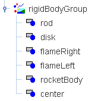

[The rigid body group can be transformed as a unit using an affine transformation.]
The rotation and translation simulation shows a disk with an attached rocket engine. You can drag the engine to change its distance from the center of the disk and you can adjust the thrust of the rocket engine set using a slider. The mass of the rocket and its connecting rod are assumed to be negligible.
Before you run the simulation, predict the trajectory of the disk. Can you give a reason for the observed motion?
The general motion of a rigid body can be decoupled into translational and rotational motion problems that can be solved independently. If the body is free to translate and rotate, the translation is described by the position of its center of mass (Xcm, Ycm) and the rotation is described by an angular displacement θ about the center of mass. The three dynamical coordinates (Xcm, Ycm, θ ) each obey their own second order differential equations.
[Give equations here and the describe torque and Newton's second law for rotation.]
EJS makes it straightforward to simulate the rocket-disk motion. The rigid body is modeled as a collection of elements and the group's position (Xcm, Ycm) and orientation θ are computed by solving the dynamical equations of motion. The only mathematical difficulty is the computation of the x and y component of the rocket thrust. Because the rocket thrust is always directed along the x-direction in the rigid body group, we merely transform the thrust vector (force vector) from the body group to the space (inertial) reference frame to solve for the center of mass motion. Transforming between the space and body frames is a convenient trick in 2D but will become an essential mathematical tool in 3D.
Note: If the rotation axis is fixed about an axis of rotation, rotation must occur about that axis and only the differential equation for the angular displacement θ must be solved.
Center or mass coordinates and rotational dynamics are discussed in the following texts:
The rotation and translation simulation was created by Wolfgang Christian using the Easy Java Simulations (EJS) modeling tool. You can examine and modify the physical model for this simulation if you have Ejs installed by right-clicking within the wave function plot and selecting "Open Ejs Model" from the pop-up menu. Information about Ejs is available at: <http://www.um.es/fem/Ejs/> and in the OSP comPADRE collection <http://www.compadre.org/OSP/>.